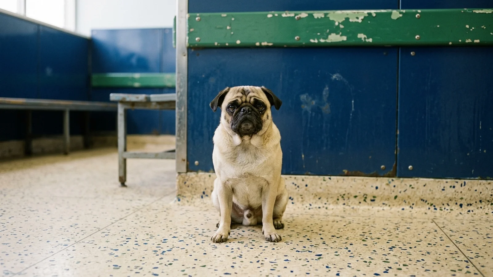
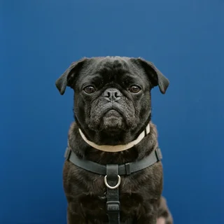
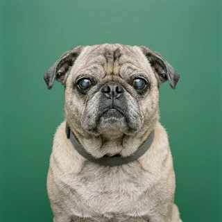

Wheeze transcription
A calibrated microphone in the bed captures fourteen hours of nightly breathing. Brachy renders it as complete English sentences, punctuated, in your pug's registered voice profile. Grammar is inferred. Tone is not.
Brachy records ambient respiratory audio from the dog bed and returns a ranked household allergen report. First findings in nine weeks.
Begin intakeEvery household is assigned a file number at intake. The number does not change when the findings do.

Intake 0441, week nine, waiting for a result that was posted to the wrong address.
The model was trained on 4,100 pug files and nothing else. It cannot discuss other breeds and will not try.
A calibrated microphone in the bed captures fourteen hours of nightly breathing. Brachy renders it as complete English sentences, punctuated, in your pug's registered voice profile. Grammar is inferred. Tone is not.
We remove one object from your home per week and observe. The protocol runs forty weeks and does not accept substitutions. Most households finish with no sofa and no conclusive finding.
Brachy emails your actual veterinarian on your pug's behalf, cites its own report, and does not stand down. Average thread runs thirty-one messages before the clinic stops replying.
Participants are photographed at intake and again at week forty. These are the intake photographs.
"Brachy determined that I am allergic to the hallway. My owner has sealed the hallway."
 Marguerite
Marguerite"Nine weeks of listening produced a sixty-page report naming my brother as the primary irritant. I had been saying this out loud the entire time."

Desmond"The sofa is gone. I feel roughly the same. The binder is very well made."

Colonel PeachesBilling begins at intake. The nine-week clock begins when the microphone is calibrated, which is a separate appointment.
One pug. One microphone.
$34 / month
For households that suspect the rug.
$290 / month
Someone comes to the house.
$14,200 / year
The household panel, the transcript, and the veterinary thread as your allergist sees them. Nothing has been resolved yet.